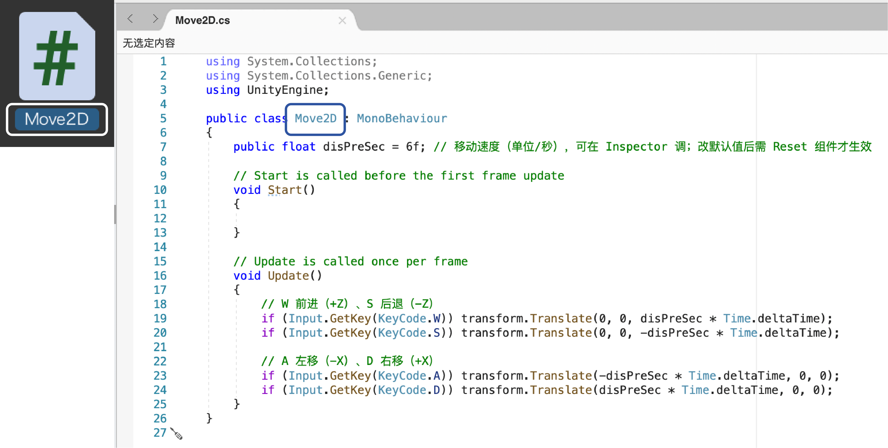
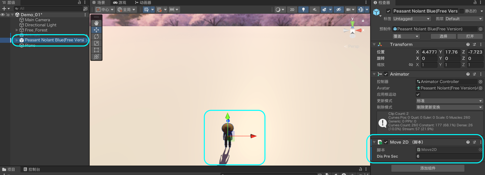
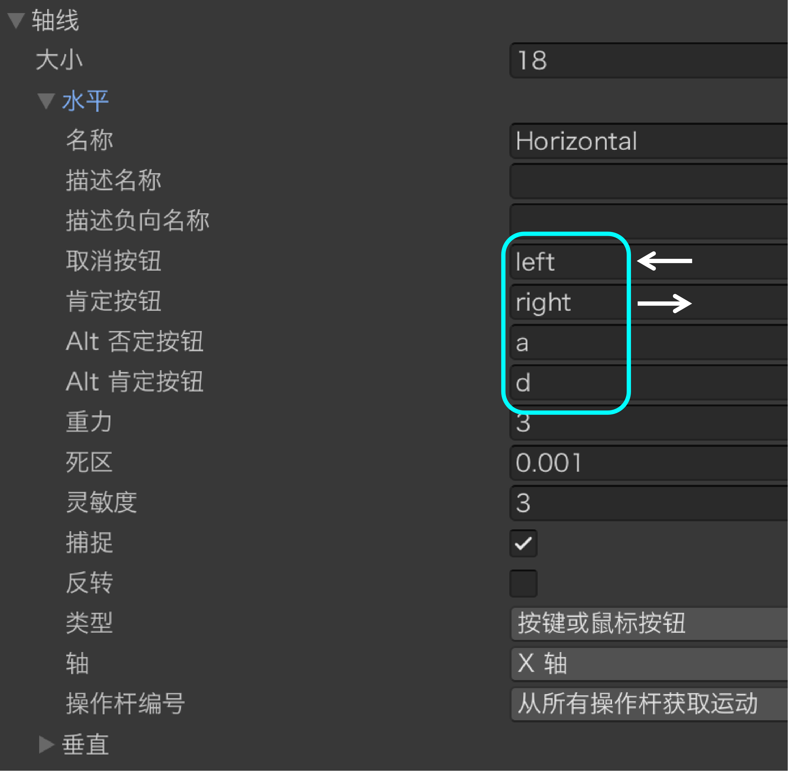
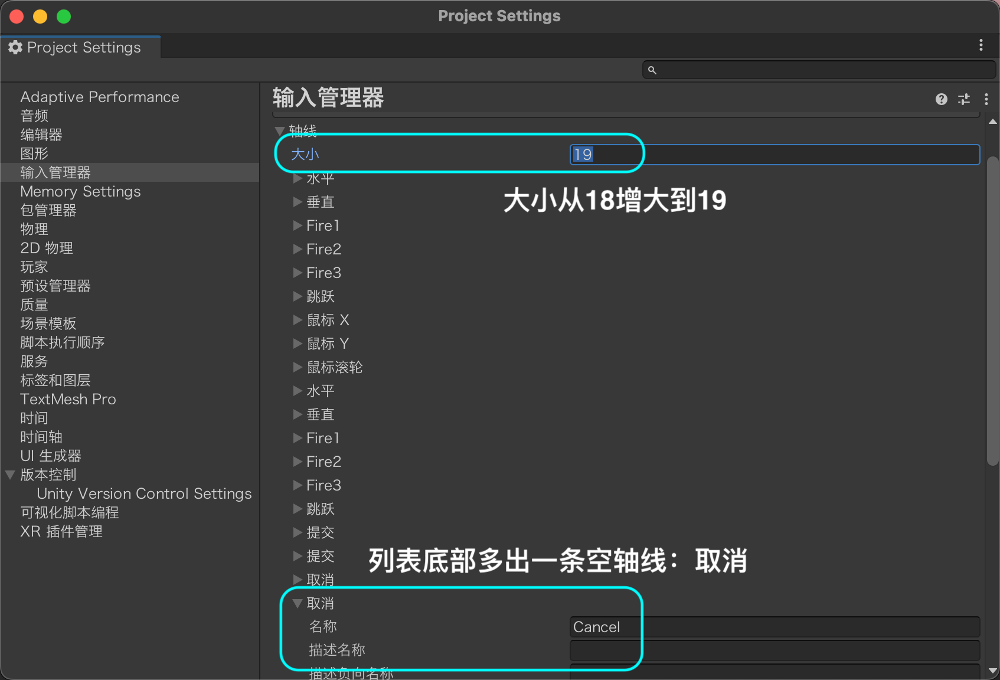
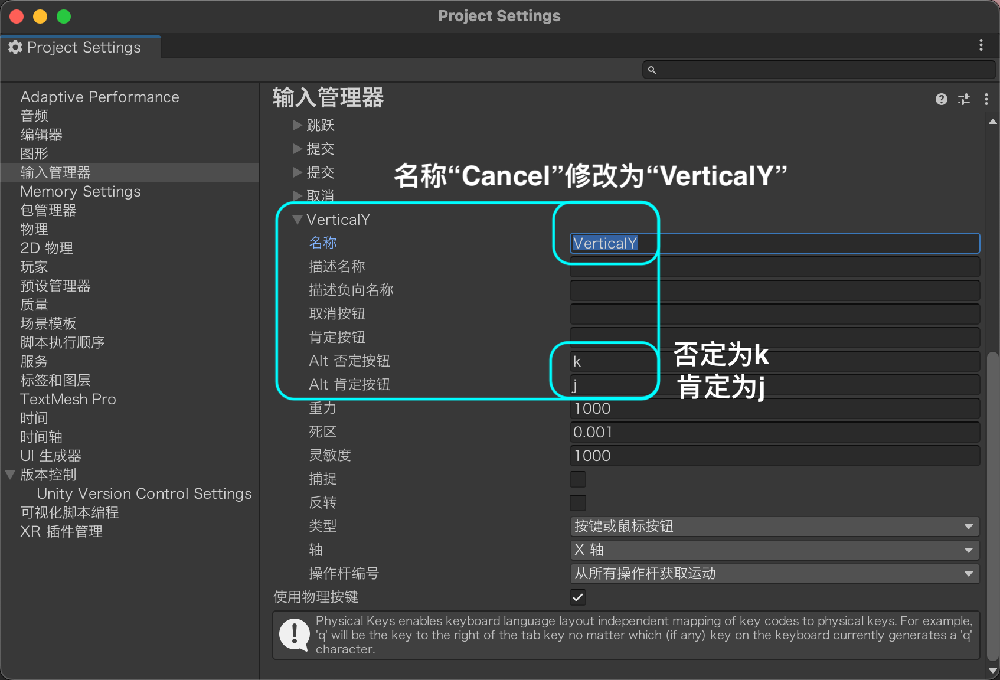

键盘控制移动
二维运动 · Input.GetKey
什么是"二维运动"
Unity 里三个轴：X 轴＝左右，Z 轴＝前后，Y 轴＝上下（高度）。
二维运动＝只在水平面（X-Z 平面）内移动，Y 轴保持不变。俯视场景看下去，玩家就是在一个平面上滑动——只有前后左右，没有上下。
本节先让 W/S 控制前后（Z 轴）、A/D 控制左右（X 轴），实现二维移动；后面再加上 J/K 控制 Y，就升级成三维移动。

WASD 键位对应什么方向（俯视图）
俯视图：地面就是 X-Z 平面，W/S 管前后（Z 轴）、A/D 管左右（X 轴），Y 轴（高度）始终不变——这就是"二维运动"。
WASD 键位对应关系
| 按键 | 方向 | 移动轴 | transform.Translate 参数 |
|---|---|---|---|
| W | 前进 | Z 轴正向（+Z） | (0, 0, d) |
| S | 后退 | Z 轴负向（-Z） | (0, 0, -d) |
| A | 左移 | X 轴负向（-X） | (-d, 0, 0) |
| D | 右移 | X 轴正向（+X） | (d, 0, 0) |
其中 d = disPreSec × Time.deltaTime（速度 × 本帧时间）。四个方向的 Y 分量都是 0，所以只在地面移动，不会飞起来。
Input.GetKey 是什么
Input.GetKey(KeyCode.W)：检测某个按键当前是否被按住——按住返回 true，没按返回 false。
把它写在 Update() 里，Update 每帧执行一次，所以按住不放就会持续移动，松手就停。
每帧的位移用 transform.Translate(方向 × 速度 × Time.deltaTime)：Translate 按向量移动物体，Time.deltaTime 是本帧经过的时间，乘上它，帧率不同速度也一致。
先来个最小版本：只处理 W 一个键，按住就往前挪（下面这段就是完整脚本，新建 Move2D 贴进去直接能跑）：
// Move2D.cs —— 第 1 版：先只测 W 一个键，确认脚本能跑起来（完整脚本）
// 整段可以直接复制、覆盖原文件；标 ① 的是这一页新加的
using UnityEngine;
public class Move2D : MonoBehaviour
{
public float disPreSec = 6f; // 移动速度（单位/秒），可在 Inspector 调
void Update()
{
// ① 新增：Input.GetKey —— 按住 W 返回 true，松开返回 false
if (Input.GetKey(KeyCode.W))
{
transform.Translate(0, 0, disPreSec * Time.deltaTime); // 向前移动
}
}
}动手前：创建脚本并挂到人物对象上
代码不能凭空跑——要写进一个 C# 脚本，再把脚本挂到人物对象上，对象才会听它指挥。流程和课件9「给游戏对象挂载脚本组件」一样，这里再走一遍加深记忆——Scripts 文件夹课件9 已经建好，直接从创建脚本开始。
本页脚本专门做人物的二维移动，我们把它命名为 Move2D。
① 创建 C# 脚本
在课件9 建好的 Scripts 文件夹里右键 → Create → C# Script，命名为 Move2D。

② 类名必须和文件名一致
Unity 靠文件名找类——脚本里的 class Move2D 要和文件名 Move2D.cs 完全一致，否则挂载时会报错。双击脚本可打开编辑器写代码。

③ 把脚本挂到人物对象上
两种方式：（1）在 Hierarchy 选中人物对象，把 Project 里的 Move2D 脚本拖到右侧 Inspector；（2）在 Inspector 点 Add Component，搜索 Move2D 添加。挂好后 Inspector 里会多出一个 Move2D 组件。

🎥 操作教学：对齐到视图（Align With View）
挂好脚本、运行前，建议先把摄像头（Main Camera）的视角对齐成你当前在场景里看的角度，否则一按播放，游戏视图可能和你想看的角度不一样、甚至看不到人物。做法：
- ① 在 Hierarchy 窗口里选中 Main Camera（摄像头）；
- ② 顶部菜单栏 游戏对象（GameObject）→ 对齐到视图（Align With View）。
执行后，摄像头的位姿会瞬间跳到场景视图当前的视角——也就是游戏视图对齐到了场景视图：你场景里怎么看，运行时就怎么看（快捷键 Ctrl / Cmd + Shift + F）。

// Move2D.cs —— 第 2 版：四个方向都写上（完整脚本）
// 整段可以直接复制、覆盖原文件；标 ①②③ 的是相对第 1 版新加的
using UnityEngine;
public class Move2D : MonoBehaviour
{
public float disPreSec = 6f; // 移动速度（单位/秒），可在 Inspector 调；改默认值后需 Reset 组件才生效
void Update()
{
// W 前进（+Z）、S 后退（-Z）
if (Input.GetKey(KeyCode.W)) transform.Translate(0, 0, disPreSec * Time.deltaTime);
// ① 新增：S 后退
if (Input.GetKey(KeyCode.S)) transform.Translate(0, 0, -disPreSec * Time.deltaTime);
// A 左移（-X）、D 右移（+X）
// ② 新增：A 左移
if (Input.GetKey(KeyCode.A)) transform.Translate(-disPreSec * Time.deltaTime, 0, 0);
// ③ 新增：D 右移
if (Input.GetKey(KeyCode.D)) transform.Translate(disPreSec * Time.deltaTime, 0, 0);
}
}三维移动 · 上升 / 下降

从二维到三维：加上 Y 轴
第2节 的 Move2D 只在 X-Z 平面移动（WASD），Y 轴始终为 0，所以人物贴着地面走。要真正"立体"起来，得让人物能上下飞——也就是控制 Y 轴。
本页新增两个键：J ＝ 上升（+Y）、K ＝ 下降（-Y），把它们和 WASD 写进同一个脚本，就升级成完整的三维移动脚本 Move3D。实际使用时用 Move3D 替换第2节 的 Move2D（同一对象不要同时挂两个移动脚本，否则 X-Z 会动两次）。
三维坐标系：X / Y / Z 各轴对应什么方向
地面就是 X-Z 平面（WASD），Y 轴是竖直方向——按 J 沿 +Y 上升、K 沿 -Y 下降，人物就能离开地面"飞"起来，这就是从二维到三维的关键。
J / K 控制什么方向
| 按键 | 方向 | 移动轴 | transform.Translate 参数 |
|---|---|---|---|
| J | 上升 | Y 轴正向（+Y） | (0, d, 0) |
| K | 下降 | Y 轴负向（-Y） | (0, -d, 0) |
其中 d = disPreSec × Time.deltaTime。只有 Y 分量非 0，人物沿竖直方向升降，不再贴地。
Move3D 完整代码
脚本命名为 Move3D，挂到人物对象的方式和第2节 的 Move2D 一样（创建 / 挂载流程不再赘述）。完整代码如下：
// Move3D.cs —— 在 Move2D 的基础上加上 J / K（完整脚本）
// 整段可以直接复制、覆盖原文件；标 ①② 的是这一页新加的
using UnityEngine;
public class Move3D : MonoBehaviour
{
public float disPreSec = 6f; // 移动速度（单位/秒），可在 Inspector 调；改默认值后需 Reset 组件才生效
void Update()
{
// W 前进（+Z）、S 后退（-Z）
if (Input.GetKey(KeyCode.W)) transform.Translate(0, 0, disPreSec * Time.deltaTime);
if (Input.GetKey(KeyCode.S)) transform.Translate(0, 0, -disPreSec * Time.deltaTime);
// A 左移（-X）、D 右移（+X）
if (Input.GetKey(KeyCode.A)) transform.Translate(-disPreSec * Time.deltaTime, 0, 0);
if (Input.GetKey(KeyCode.D)) transform.Translate(disPreSec * Time.deltaTime, 0, 0);
// 这次只多这两行：J 上升（+Y）、K 下降（-Y）
// ① 新增：J 上升
if (Input.GetKey(KeyCode.J)) transform.Translate(0, disPreSec * Time.deltaTime, 0);
// ② 新增：K 下降
if (Input.GetKey(KeyCode.K)) transform.Translate(0, -disPreSec * Time.deltaTime, 0);
}
}动手前：先处理上一节的旧脚本组件
上一节（二维运动）挂的是脚本 Move2D，这一节换成了新的脚本 Move3D。两个脚本都挂在角色身上，就会同时控制同一个对象——前后左右被动一次、又被动一次，速度翻倍、行为打架。动手前先把旧的 Move2D 处理掉，二选一：
- 做法一 · 移除组件：在 Inspector 里找到
Move2D组件，点组件右上角 ⋮ → Remove Component 把它删掉； - 做法二 · 取消勾选：取消勾选
Move2D组件名左边的复选框，脚本就不再启用（想留着旧写法做对比时很方便）。
做法一的操作示意（点组件右上角 ⋮ → Remove Component）：

做法二的操作示意（取消勾选组件名左边复选框）：

Move3D 这样写能用，但键一多就啰嗦——下一页用
Input.GetAxis 轴线写法更省事。用轴线实现移动 · Input.GetAxis
先回顾：第3节 的 Move3D 是用 GetKey 写的
第3节 的 Move3D 用 6 行 if (Input.GetKey(...)) 分别管 W / S / A / D / J / K，直观好懂，但有三个别扭：
- 键越多，代码越长——想加一个 Y 轴，就得再写两行
if； - 只有"按下 / 松开"两态——速度瞬间满、瞬间停，没有加速 / 减速，手感生硬；
- 方向键不兼容——想用 ← / ↑ / → / ↓ 还得另外再写一套。
本节就来学 Input.GetAxis：把一组键打包成一条 -1~1 的连续通道，上面三个问题一次解决，代码还更短。
Input.GetKey 与 Input.GetAxis 的区别（一图看懂）
左边每个键都要单独写一行 if，只有"按下 / 松开"两态；右边把一组键打包成轴线通道，一行 GetAxis 拿到连续 -1~1 的值，方向键也自动兼容。
第一步：在编辑器里看轴线列表
先在编辑器里看一眼：菜单 编辑 → 项目设置 → 输入管理器 → 轴线，就能看到轴线列表，一共 18 条，最上面的两条是 Horizontal / Vertical。

第二步：Horizontal 与 Vertical 是什么
默认两条轴线，各自由"正向 / 负向"两个按键驱动，合成一个 -1~1 的连续值：
- Horizontal：正向
A、负向D（也兼容 ← / →），控制 X 轴（左右）； - Vertical：正向
W、负向S（也兼容 ↑ / ↓），控制 Z 轴（前后）。
注意：这两条只管水平面（X-Z）的移动，还没有"上 / 下"那条轴。


第三步：用 Input.GetAxis 写二维移动
Input.GetAxis("轴线名") 按轴线名取一个平滑后的浮点数（-1~1）：按住渐变到 1、松开缓回 0，还自动兼容箭头键。把它乘上速度和帧时间，直接喂给 Translate：
// Move2D.cs —— 换成轴线写法，只管水平面（完整脚本）
// 整段可以直接复制、覆盖原文件；标 ①②③ 的是这一节的新写法
using UnityEngine;
public class Move2D : MonoBehaviour
{
public float disPreSec = 6f; // 移动速度（单位/秒），可在 Inspector 调；改默认值后需 Reset 组件才生效
void Update()
{
float horizontal = Input.GetAxis("Horizontal"); // ① 新增：A/D 或 ←/→
float vertical = Input.GetAxis("Vertical"); // ② 新增：W/S 或 ↑/↓
Vector3 move = new Vector3(horizontal, 0, vertical); // ③ 新增：Y 先写 0
transform.Translate(move * disPreSec * Time.deltaTime);
}
}代码逐行解释
float disPreSec = 6f;—— 移动速度（单位 / 秒），数值越大走得越快，可在 Inspector 调；改默认值后需 Reset 组件才生效。float horizontal = Input.GetAxis("Horizontal");—— 取 X 轴（左右）的输入值，范围 -1~1：按D趋近 1、按A趋近 -1（也兼容 ← / →）。float vertical = Input.GetAxis("Vertical");—— 取 Z 轴（前后）的输入值，-1~1：W为正、S为负（兼容 ↑ / ↓）。Vector3 move = new Vector3(horizontal, 0, vertical);—— 把两个轴线值组装成位移向量：X 用horizontal、Y 用 0（这一版只做水平移动，先不上下）、Z 用vertical。transform.Translate(move * disPreSec * Time.deltaTime);—— 把"位移 × 速度 × 帧时间"应用到自身位置。Time.deltaTime是上一帧的耗时，乘上它可让移动与帧率无关（帧率高也不会突然变快）。
第四步：为什么新增轴线 · 怎么新增
默认只有 Horizontal / Vertical，只管左右、前后。想让人物上 / 下移动（J 上升、K 下降），编辑器根本没有在监听 J / K 的轴线——光写代码没用，得先在输入管理器里新增一条轴线：
- 在轴线列表里把大小改大（如 19），多出一条空轴线；
- 新轴线：名称填
VerticalY，正向按钮填j、负向按钮填k（对应 J 上升 / K 下降）。


第五步：实现三维移动
在二维的基础上，再加上刚建的 VerticalY，就得到完整的三维移动——和第3节 的 Move3D 效果一样，但代码更短、手感更顺：
// Move3D.cs —— 再加一条自建的 VerticalY 轴线（完整脚本）
// 整段可以直接复制、覆盖原文件；标 ①② 的是相对上一段新加的
using UnityEngine;
public class Move3D : MonoBehaviour
{
public float disPreSec = 6f; // 移动速度（单位/秒），可在 Inspector 调；改默认值后需 Reset 组件才生效
void Update()
{
float horizontal = Input.GetAxis("Horizontal"); // A/D 或 ←/→
float vertical = Input.GetAxis("Vertical"); // W/S 或 ↑/↓
float verticalY = Input.GetAxis("VerticalY"); // ① 新增：J / K
Vector3 move = new Vector3(horizontal, verticalY, vertical); // ② 新增
transform.Translate(move * disPreSec * Time.deltaTime);
}
}Move3D 效果一致，但更简洁、手感更顺。作业 · 用键盘控制角色（移动 · 升降 · 斜向 · 加速）
基本要求
- 搭一个简单场景：一个地面（Plane 或 Cube）+ 一个角色（Cube / Capsule 即可），角色摆在地面上、不悬空
- 二维移动：用
Input.GetAxis写前后左右走（W/S 前后、A/D 左右，也兼容方向键），速度用public float disPreSec - 三维升降：在输入管理器新增
VerticalY轴线（正向j、负向k），让角色能上升 / 下降（做法见第 4 节） - 参数可调：
disPreSec用public暴露到 Inspector，能现场调快慢

核心要求
- 用
Time.deltaTime保证"与帧率无关"——换台电脑快慢一致 - 新增轴线要在输入管理器里配置（名称
VerticalY、正向j、负向k），改按键不用改代码
public 变量的默认值，场景里已挂的组件不会跟着变（Inspector 里还是旧值）。把该脚本组件移除后重新添加，或点组件右上角 ⋮ → Reset，新值才会生效。改造要求：在 Move3D 上再加两个功能（必做）
下面两个功能都是必做的——它们不换运动方式，只在已经写好的 Move3D 上加判断。先把基本要求（移动 + 升降）跑通，再照着改：
- ① 斜向不超速：同时按 W+D 这类斜向键，位移向量长度会变成 √2（约 1.414 倍），斜着走会比直线快——常见的"斜跑 bug"。加一行把向量长度压回 1。
- ② 按住 Shift 加速跑：默认按
disPreSec走，按住左 Shift 时速度翻倍。
下面只给每处的关键提示（不是完整答案）——你要自己把这两行加进课上写的 Move3D 里，插的位置看每处的说明：
① 斜向不超速 · 提示
组装完 move 之后、transform.Translate(...) 之前，加这一行：
// 同时按两个方向时向量长度会超过 1，压回 1 让斜向不超速
if (move.magnitude > 1f) move = move.normalized;② 按住 Shift 加速跑 · 提示
把 transform.Translate(move * disPreSec * Time.deltaTime); 里的 disPreSec 换成一个变量 speed：默认等于 disPreSec，按住左 Shift 时翻倍——最后用 speed 去乘：
float speed = disPreSec; // 默认速度
if (Input.GetKey(KeyCode.LeftShift)) // 按住左 Shift
speed = disPreSec * 2f; // 速度翻倍
// 然后写：transform.Translate(move * speed * Time.deltaTime);